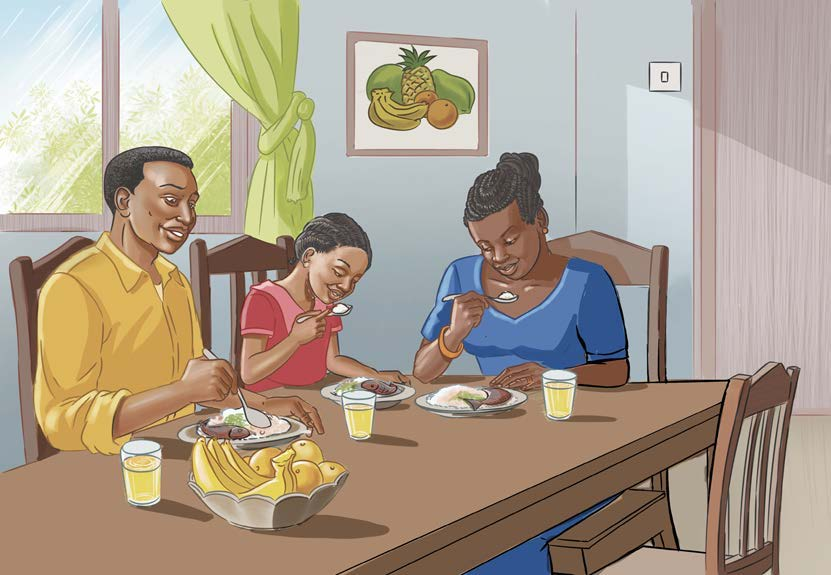

Nakili habari ya Jeni na mama yake waandaa chakula kwa mwandiko wa kuunga; tumia eneo la kuandikia, kibodi au Breli.
Kuandika habari fupi kwa mwandiko wa kuunga Zoezi la tisa Andika habari ifuatayo kwa mwandiko wa kuunga: Jeni na mama yake waandaa chakula

Jana, Jeni na mama yake walikwenda sokoni. Walinunua kabichi, nyanya, samaki na matunda. Waliporudi nyumbani, Jeni aliwasha jiko. Baada ya hapo, mama yake alipika samaki. Pia, alipika kabichi, kisha akapika wali. Jioni, baba yake Jeni alirudi nyumbani. Chakula kilikuwa tayari. Jeni aliandaa chakula mezani. Wote walifurahia kula chakula hicho. Baba yake Jeni alisema kuwa chakula kilikuwa kitamu sana.